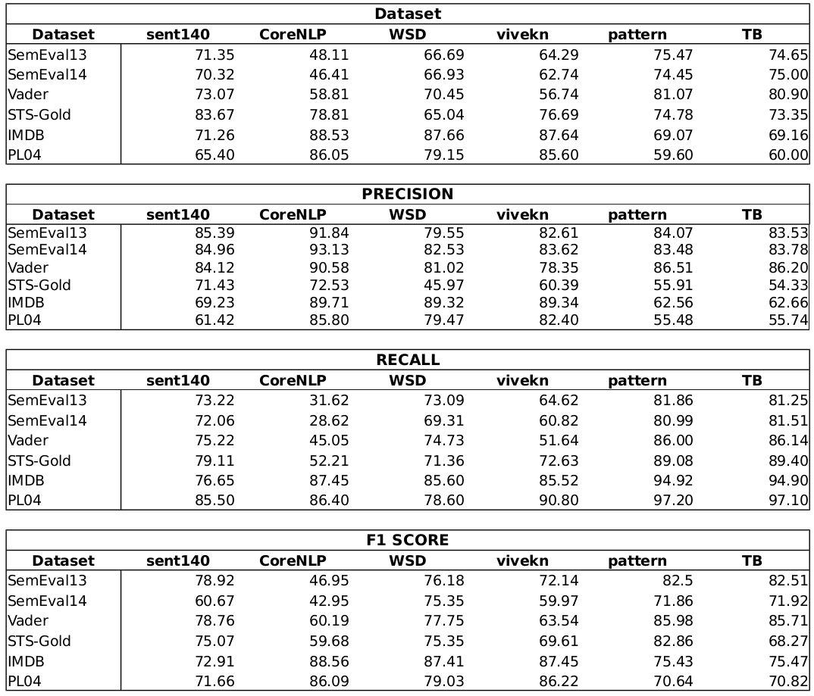
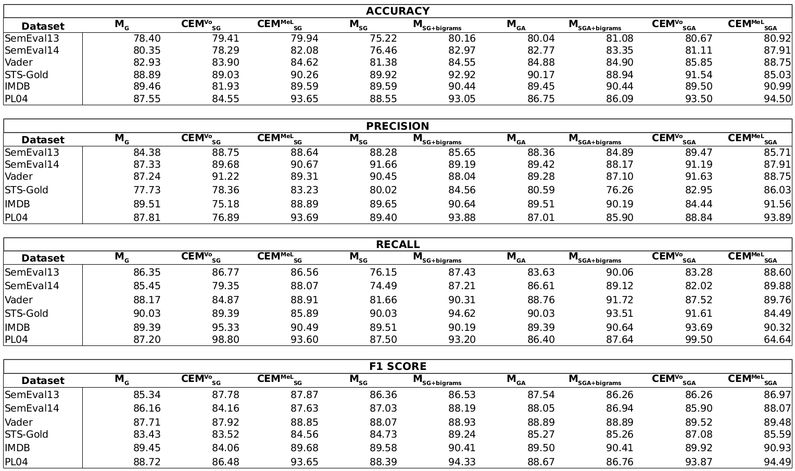

Enhancing Deep Learning Sentiment Analysis with Ensemble Techniques in Social Applications
Additional material for the paper submitted to Expert Systems with Applications
Extended metrics of the models
Performance metrics for the base classifiers.
Performance metrics for the proposed models.
Vectorial models for download
Word2Vec for Twitter modelDoc2Vec for Movie Reviews model
For loading the models, the gensim library may be used. Python sample code:
from gensim.models import Word2Vec, Doc2Vec
import numpy as np
twitter_word2vec_model = Word2Vec.load_word2vec_format('path-to-twitter-model')
movie_doc2vec_model = Doc2Vec.load_word2vec_format('path-to-dos2vec-movie-model')
def read_sentiwords(vecs_f, vocab_f):
sentiwords = dict()
with open(vocab_f, 'r') as f:
vocab = f.read().splitlines()
with open(vecs_f, 'r') as f:
for i, line in enumerate(f):
v = np.fromstring(line, sep=' ')
sentiwords[vocab[i]] = v
return sentiwords
movie_sswe_model = read_sentiwords('path-to-vecs-file', 'path-to-vocab-file')